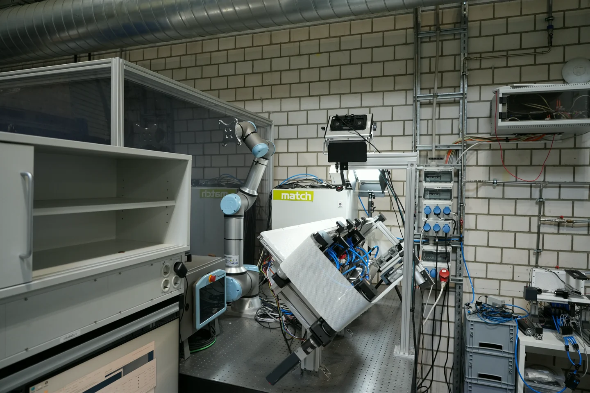
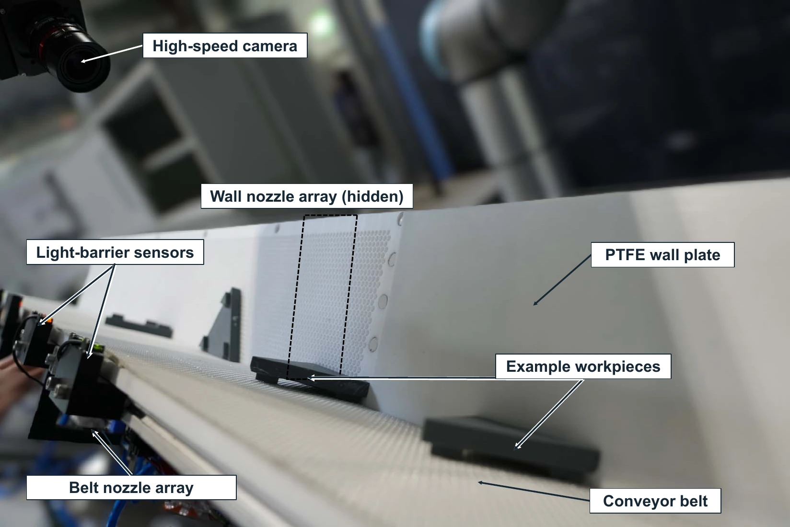
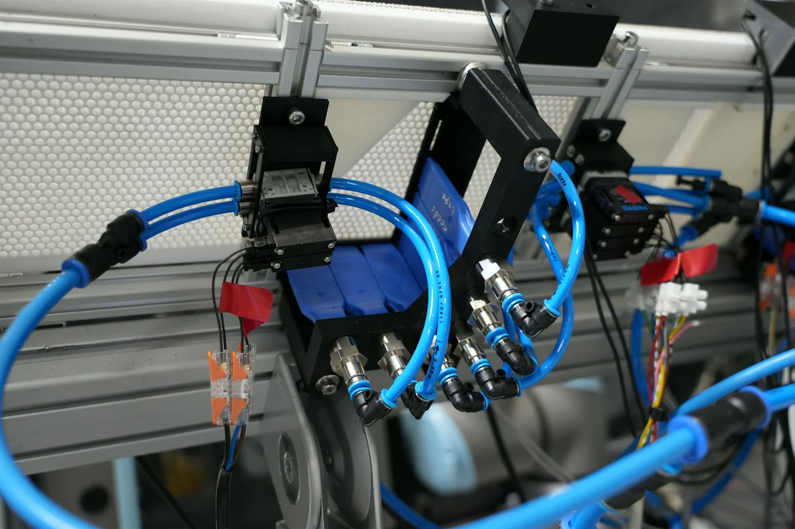
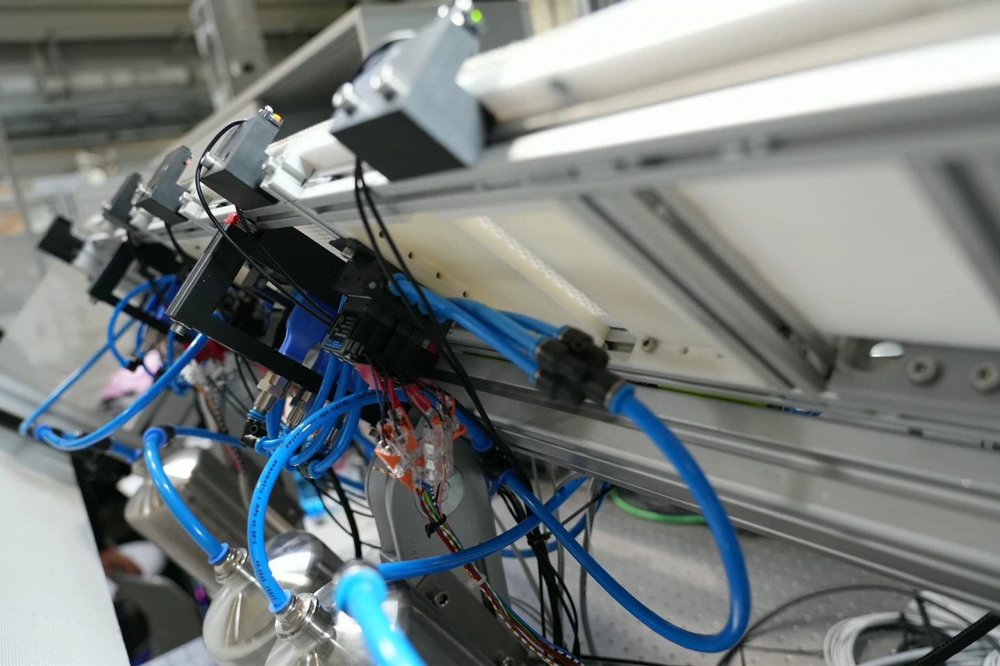
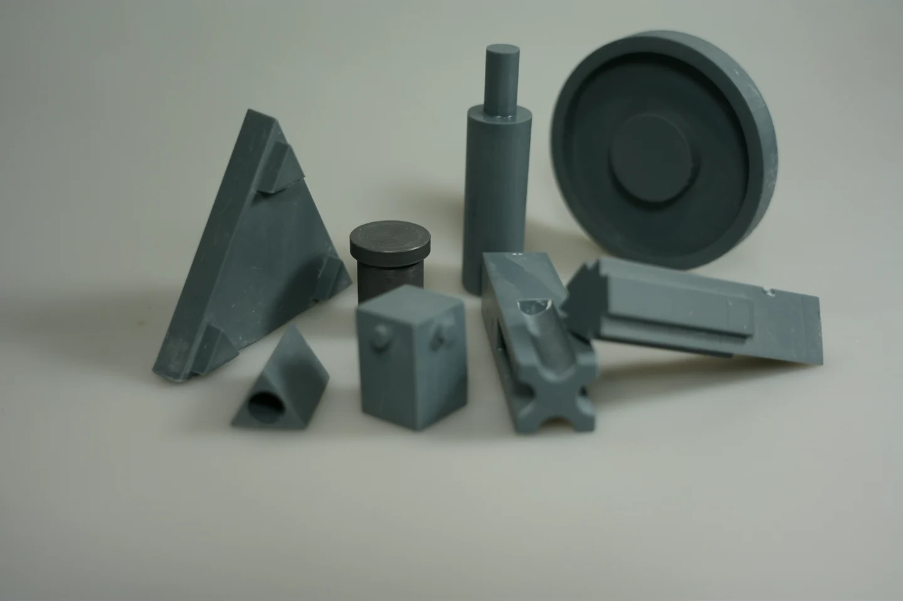
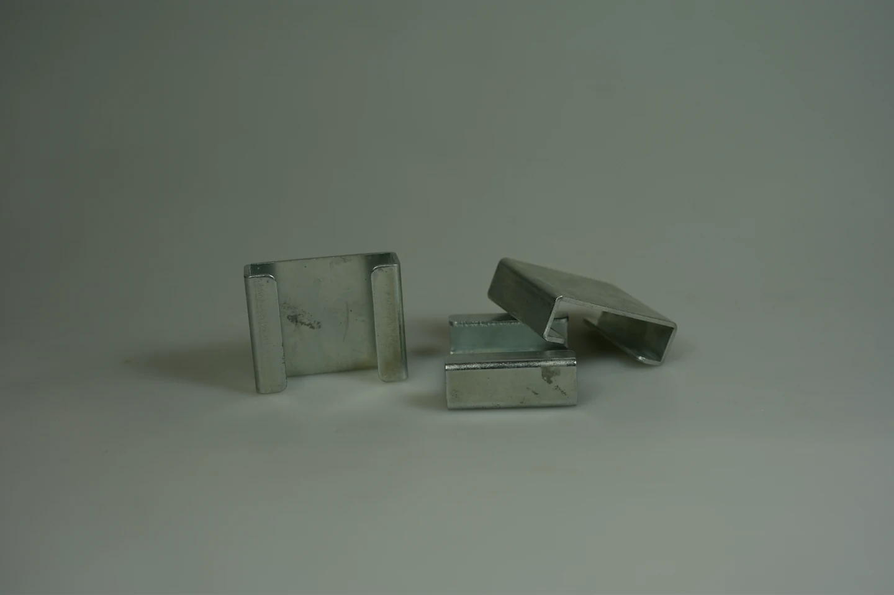
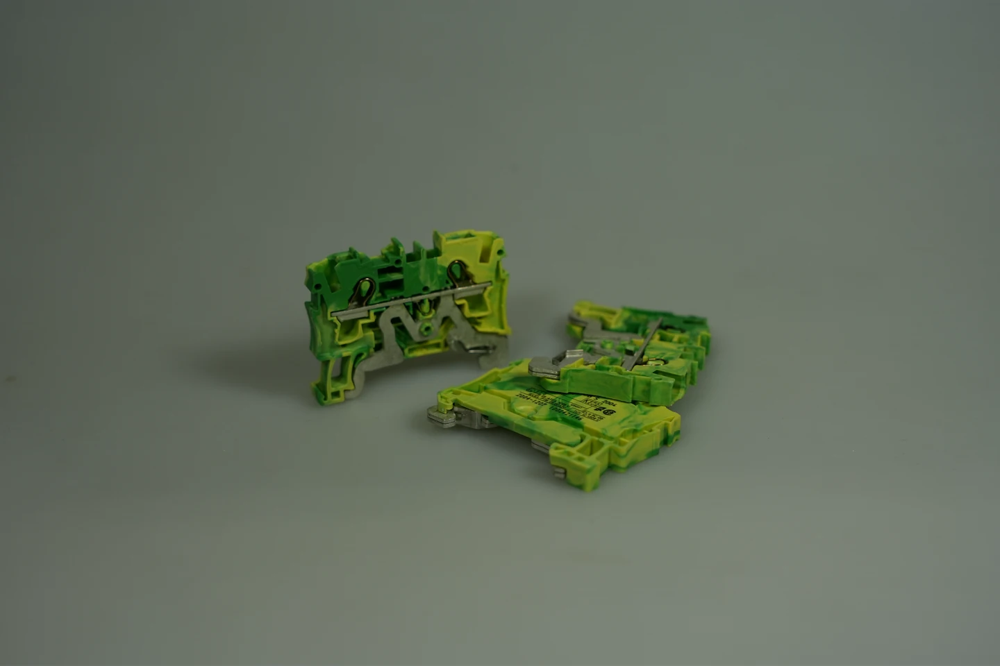
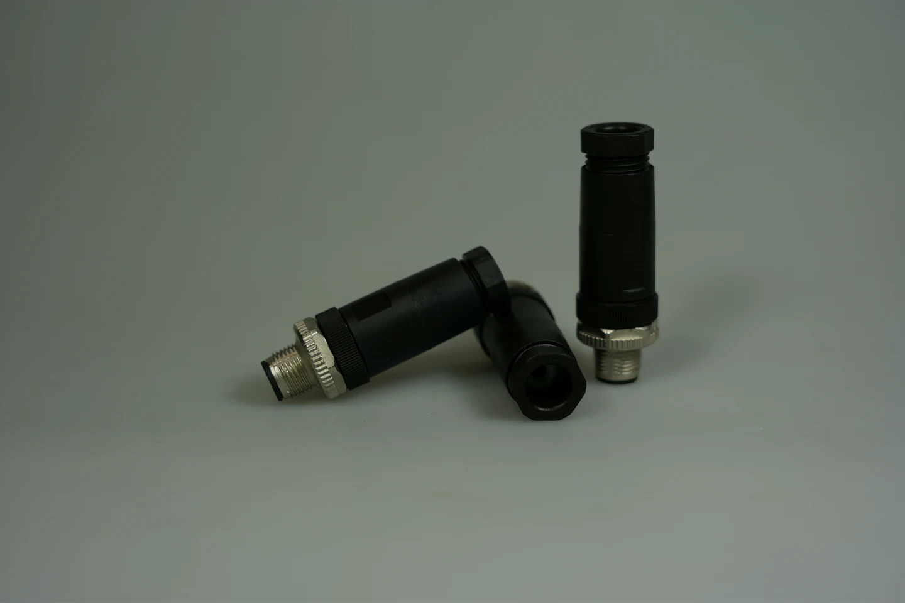
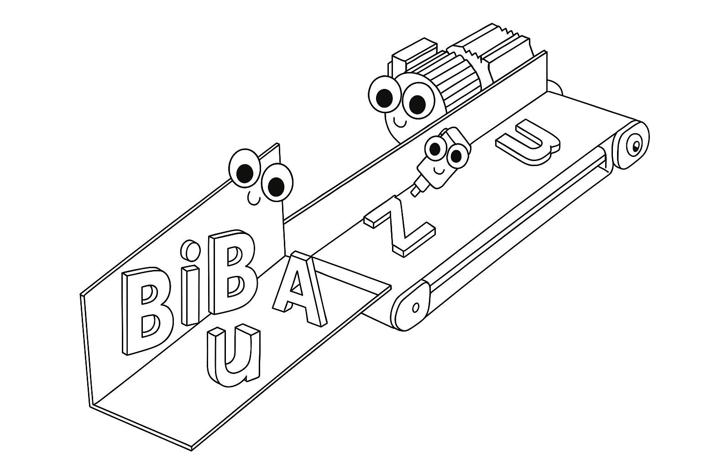

match · Leibniz University Hannover
Image-based aerodynamic part feeding
BiBaZu investigates how camera-based pose recognition, simulation and controlled air pulses can orient small parts for automated assembly.
Experimental setup
Prototype and workpieces
The BiBaZu test stand uses a camera to identify workpiece poses and timed air pulses to turn parts on the conveyor.
















Code and data
Repositories
Explore the experimental hardware, vision tools, and simulation pipeline.

Test stands and control
- Large test stand
Conveyor, pneumatic control, camera integration and experiment logging.
- Mini test stand
TwinCAT control for a smaller pneumatic test rig.
- AutoTune
Geometry analysis and controlled tests for air-pulse parameters.
- Nozzle force finder
Vision and workpiece catalog
- Baumer camera tools
Live contours, angle measurements and high-speed capture.
- Automated image capture
Training image acquisition, labeling and YOLO workflows.
- Component catalog
STEP and STL models for 39 workpieces with a selection tool.
Simulation and pose data
- Design parameter simulator
PyBullet simulations for selecting prototype design parameters.
- Drop simulator
MuJoCo trials for workpieces landing on the conveyor chute.
- Stable component poses
Simulation results, trial settings and pose catalogs.
- Reorientation roadmaps
Generate roadmaps from observed poses and candidate transitions.
Research output
Papers
-
2026
The usual Suspects: A Geometrically Grounded Component Catalog for Benchmarking the Flexibility of Industrial Part Feeding Systems
Dasha Shieff, Torge Kolditz and Annika Raatz · CIRPe 2026 · Camera-ready manuscript
Code and CAD · Component catalog and selector
-
2026
Just Add Air: Flexible Part Feeding Through Controlled Aerodynamics
Dasha Shieff, Leonard Olfens, Michael Halmbacher, Tobias Recker, Torge Kolditz and Annika Raatz · WGP-Jahreskongress 2026 · Camera-ready manuscript
Related code · AutoTune analytical model
-
2025
Aerodynamic Feeding 4.1: Simulation Based Parameter Selection for a Flexible Part Feeding Prototype ↗
Dasha Shieff, Tobias Recker and Annika Raatz · Procedia CIRP
Simulation code · PyBullet design parameter simulator
-
2025
You Only Look Once, But the Parts Keep Moving: YOLO-Based Workpiece Pose Classification for Aerodynamic Part Feeding ↗
Dasha Shieff, M. Akchi and Annika Raatz · IEEE CASE
Related code · Automated image capture and YOLO tools